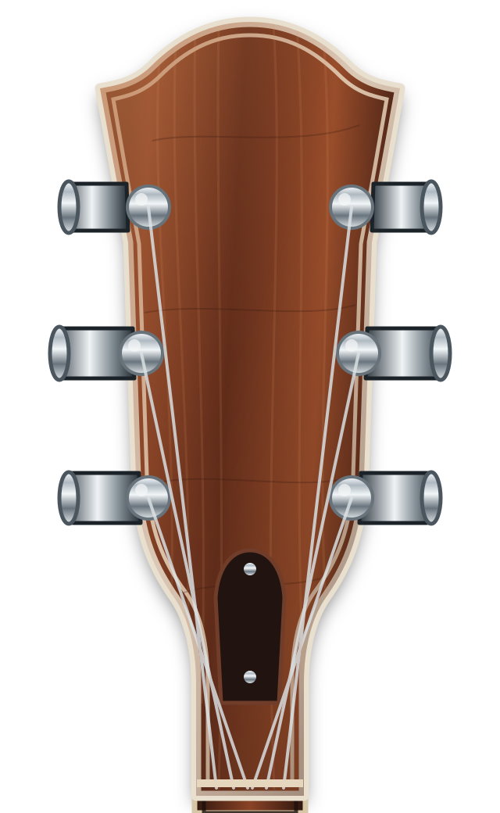

TUNING PRESET
Choose your tuning
STRING DETECTION
LIVE TUNER
E STANDARD · AUTO
♭CENTER♯
−50 cents0+50 cents
--
Play any string to detect its pitch
TARGET —

LOW E · STRING 6HIGH E · STRING 1
FREQUENCY— Hz
DEVIATION— cents
TARGET STRING—
SONG CHORDS
Chordify
Find the chords behind your favorite songs.
NOW PLAYING
Your YouTube song
VIDEO —
Use the YouTube controls to play, pause, seek and enter fullscreen. Some videos do not allow embedding.
YOUR SONG
Chord timeline
Your submitted song will appear here.
Chord results will appear here
The chord recognition engine will be connected in a later update. This screen is the frontend preview.